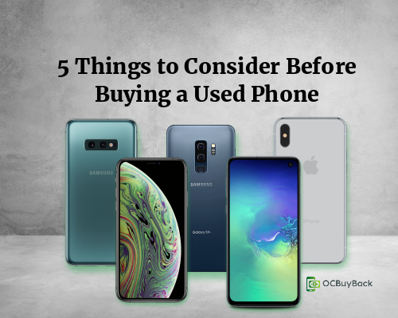

The growing competition between Apple, Samsung and others in equipping the latest phone model with up to date technology has given rise to a supply of used phones all around the world. With the latest iPhone and Samsung’s price tag of over $1,000 buying a 2-3-year-old phone is the smartest way to save money. Think of your phone as you would a car in terms of depreciation, within 2 years your phone will devalue significantly. There are many online platforms to sell or buy your used phone. Finding the right one can be challenging. If you are looking to buy a used phone but don’t know where to start consider these 5 things.
1. Buy from a Trusted Seller & Compare Prices
When you purchase a phone online you want to make sure your information is safe and the seller is reputable. You will also want to compare prices online to make sure you are paying a fair price for your used phone. If you are buying online you should read the seller’s reviews to ensure they are getting positive feedback from their past customers. If prior customers noted that their orders were not delivered or not as described then you probably want to look elsewhere. However, if all is well the next thing you want to do is look closely at the photos of the device and ask any questions you may have. Also, a reputable seller will have a return policy set in place for at least 14 to 30 days in case the phone malfunctions.
2. Inspect the Cell Phone
Smartphones today come furnished with many features. The first thing you want to do when you receive your phone is to run a test on all functionalities such as camera, video, flash, touch screen, voice recorder, keypad and apps. The mistake most phone buyers make when they receive the phone is look at it once and put it down then test it as they go. With a return policy of 14-30 days you must test all components as soon as possible to ensure no malfunctions are found after that time is up. Test to see that the phone can withstand an array of temperatures and can charge for up to a day of active use per charge. Check the phone’s exterior frame and screen to make sure you don’t see any cracks or chips unless otherwise noted on the seller’s listing.
3. Consider Whether You Need an Unlocked Phone
Not all secondhand smartphones will work with your carrier although some models may be unlocked to use with any carrier. Check to see if the phone is unlocked or tied to a specific carrier. Let’s break it down, GSM, CDMA or Unlocked which one should you choose and what is the difference? GSM (Global System for Mobile) phones are compatible with AT&T and T-Mobile carriers. CDMA (Code Division Multiple Access) phones are compatible with two well known carriers Verizon and Sprint. Factory unlocked phones can be used with any carrier you choose.
4. Check to See that the Phone was Not Reported Stolen
Cell phone theft is among the most prevailing crimes of modern age so you want to make sure you are not buying a phone that has been stolen. There are several ways on how to check if your phone has clean ESN or IMEI. Fortunately, many smartphones can easily be deactivated remotely by enabling “Find my iPhone”. Once the smartphone has been deactivated it locks the phone and prevents another person from using it as their own. If the seller has a certified point inspection then you can rest assure you are not buying a stolen phone.
5. The Difference Between Refurbished, Certified Pre-Owned and Used Phones
A phone sold by an individual will simply be a used phone sold as is, they may or may not check the functionality of the device. A Certified pre-owned phone is a phone sold by a re-seller and will inspect to certify that all components are functional. A Certified Refurbished phone is a phone in which the re-seller has updated hardware or software components along with certifying that all components are functional.
If you are in the market to buy a certified pre-owned phone but don’t want to pay full retail price check out OCBuyBack on Swappa or if you have a cell phone you want to sell for cash today go to OCBuyBack directly. You can learn more about OCBuyBack and how it works here.